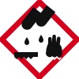

Secciones de la ficha
- Sección 1Identificación
- Sección 2Identificación de peligros
- Sección 3Composición
- Sección 4Primeros auxilios
- Sección 5Manipulación y almacenamiento
- Sección 6Equipos de protección personal
- Sección 7Propiedades físicas y químicas
- Sección 8Estabilidad, reactividad y compatibilidad
- Sección 9Emergencias, derrames y eliminación
1Identificación↑ Menú
- Nombre
- Ácido sulfúrico
- Fórmula química
- H2SO4
- Nomenclatura sistemática
- Tetraoxosulfato(VI) de dihidrógeno
- Nomenclatura tradicional
- Ácido sulfúrico
- Número CAS
- 7664-93-9 [2]
- Número CE
- 231-639-5
- Identificador PubChem
- CID 1118
- Masa molar
- 98,08 g/mol
2Identificación de peligros↑ Menú

Corrosión
| Clase y categoría | Código | Indicación de peligro |
|---|---|---|
| Corrosivo para metales, categoría 1 | H290 | Puede ser corrosivo para los metales. |
| Corrosión cutánea, categoría 1A | H314 | Provoca quemaduras graves en la piel y lesiones oculares graves. |
| Lesiones oculares graves, categoría 1 | H318 | Provoca lesiones oculares graves. |
Clasificación según el SGA/GHS [2][3][5]. El pictograma mostrado es un dibujo simplificado; los pictogramas oficiales están publicados por UNECE.
Riesgos para la salud
- Quemaduras graves en piel, ojos y mucosas.
- Las nieblas ácidas de ácidos inorgánicos fuertes que contienen ácido sulfúrico están clasificadas como carcinógeno del grupo 1 por la IARC. Se refiere a exposición ocupacional a nieblas, no al uso escolar normal.
Riesgos físicos
- Puede ser corrosivo para los metales y desprender hidrógeno inflamable.
- Reacciona violentamente con agua; el contacto con combustibles puede provocar incendio.
Riesgos ambientales
No determinado en las fuentes consultadas. Evita cualquier vertido al ambiente.
Advertencias principales
No añadir agua al ácido. Evitar el contacto con piel y ojos. Almacenar separado de bases, metales y combustibles.
3Composición↑ Menú
| Componente | Fórmula | Pureza o concentración |
|---|---|---|
| Ácido sulfúrico | H2SO4 | ≈ 90–98 % en productos concentrados; el resto es agua (2–10 %) [3] |
| Agua | H2O | ≈ 2–10 % en el producto concentrado [3] |
- Se vende en muchas concentraciones (por ejemplo 96 % en agua, o soluciones 72 %, 50 %, 10 %).
- Impurezas: solo hay datos de especificaciones de productos concretos (p. ej. residuo de ignición ≤ 0,0005 % en un grado analítico). Los límites de impurezas dependen del grado del reactivo; revisa la etiqueta del fabricante.
4Primeros auxilios↑ Menú
- Exposición ocular
- Enjuaga de inmediato con abundante agua durante al menos 15 minutos, con los párpados abiertos. Retira lentes de contacto si es fácil hacerlo. Busca atención médica urgente.
- Contacto con la piel
- Quita de inmediato la ropa contaminada. Lava la piel con agua abundante (ducha de seguridad si hay una cerca) durante al menos 15 minutos. Atención médica urgente.
- Inhalación
- Lleva a la persona al aire fresco y mantenla en reposo. Si respira con dificultad o tose de forma persistente, llama a emergencias médicas.
- Ingestión
- NO provoques el vómito. Enjuaga la boca con agua. No des nada por la boca a una persona inconsciente. Llama a emergencias médicas de inmediato.
- Síntomas relevantes
- Quemaduras en piel y mucosas, dolor intenso, daño ocular grave; las nieblas o vapores irritan las vías respiratorias.
Fuentes: [2][3][10] Estas medidas son generales; sigue siempre las indicaciones de la FDS del producto y las de tu docente.
5Manipulación y almacenamiento↑ Menú
Condiciones de almacenamiento
- Recipientes bien cerrados, en lugar fresco, seco y ventilado, en una zona para corrosivos.
- Proteger de la humedad: es higroscópico y reacciona violentamente con agua.
Precauciones de manipulación
- Nunca añadas agua al ácido concentrado. Cualquier dilución la hace solo personal docente capacitado.
- Usa EPP completo y trabaja con ventilación adecuada. Evita salpicaduras y nieblas.
- Materiales de recipientes
- Se comercializa en frascos de vidrio y de polietileno de alta densidad (HDPE) para ácido ≈ 96 %. Evita envases y tapas metálicas.
- Condiciones que deben evitarse
- Calor excesivo, humedad o contacto con agua, incompatibles (ver sección 8) y luz solar directa.
- Recomendaciones de segregación
- Almacenar lejos de bases fuertes, metales, materiales combustibles u orgánicos, cianuros, sulfuros y oxidantes.
6Equipos de protección personal↑ Menú
- Protección ocular
- Gafas de seguridad con protección lateral; careta facial si hay riesgo de salpicaduras.
- Protección de manos
- Guantes resistentes a ácidos. El material y el grosor dependen de la concentración: elige según la FDS y la tabla de resistencia química del fabricante del guante.
- Protección corporal
- Bata de laboratorio de manga larga, delantal resistente a ácidos si manipulas volúmenes grandes, calzado cerrado y pantalón largo.
- Ventilación y controles
- Trabajar en campana extractora o con buena ventilación. Tener ducha de seguridad y lavaojos accesibles.
Recomendaciones preventivas
- No uses lentes de contacto en la manipulación.
- Lávate las manos después de manipular y antes de salir del laboratorio.
7Propiedades físicas y químicas↑ Menú
Los valores provienen de FDS de fabricantes y pueden variar ligeramente según el grado y la concentración. Donde hay diferencias entre fuentes se muestra el intervalo.
8Estabilidad, reactividad y compatibilidad↑ Menú
- Estabilidad química
- Estable en condiciones de almacenamiento recomendadas. No ocurre polimerización peligrosa.
- Reactividad conocida
- Reacciona violentamente con agua y con bases fuertes. Corrosivo para metales; puede desprender hidrógeno. Tiene fuerte carácter deshidratante y oxidante en estado concentrado.
- Condiciones que deben evitarse
- Calor excesivo, humedad o agua, y cualquier material incompatible.
- Riesgos de reacciones peligrosas
- Reacción violenta con agua, bases, materia orgánica y combustibles; liberación de hidrógeno con metales.
- Productos de descomposición peligrosos
- Óxidos de azufre (SOx) y, con metales, hidrógeno.
- Almacenamiento separado
- Segregar de bases, metales, combustibles/orgánicos, cianuros, sulfuros, oxidantes y haluros.
Matriz visual de compatibilidad
Entre las sustancias de CHEM SAFE
| H2SO4 | NaOH | NaCl | |
|---|---|---|---|
| H2SO4 | — | Incompatible | Incompatible |
| NaOH | Incompatible | — | Sin información |
| NaCl | Incompatible | Sin información | — |
Base: incompatibilidades listadas en FDS del ácido sulfúrico (bases fuertes y haluros). La pareja H₂SO₄ – NaCl se refiere al ácido concentrado. Sin información sobre la pareja NaOH – NaCl: no se asume compatibilidad.
9Emergencias, derrames y eliminación↑ Menú
Riesgos ante derrames
Líquido corrosivo y denso que ataca piel, ojos, metales y materia orgánica; reacciona violentamente con agua. Puede generar nieblas irritantes.
Precauciones iniciales
- Aléjate del derrame, avisa de inmediato al docente o responsable y advierte a las demás personas.
- No lo toques ni intentes limpiarlo. La limpieza la hace solo personal capacitado con EPP adecuado.
- No uses agua directa sobre ácido concentrado. Evita que llegue a desagües.
Riesgos en caso de incendio
No es combustible, pero puede favorecer la combustión de otros materiales y desprender hidrógeno con metales. En fuego libera óxidos de azufre tóxicos. Quien combate el fuego debe usar equipo de respiración autónomo.
Medidas generales de emergencia
Contacto con piel u ojos: ducha o lavaojos al menos 15 minutos y atención médica. Ventila el área y mantén alejadas a las personas ajenas.
Gestión segura de residuos
Trátalo como residuo peligroso. No lo viertas al desagüe. Recógelo en un envase compatible y rotulado, y entrégalo a un gestor autorizado según la normativa local.
✎Referencias↑ Menú
- [1] Fisher Scientific / Acros Organics. Sulfuric acid, 96 % (ficha de producto: densidad, puntos de fusión y ebullición, envases, clasificación). https://www.fishersci.com/shop/products/sulfuric-acid-pure-96-00-0-15-solution-water-acros-organics/AC302070010
- [2] Sigma-Aldrich / Aldrich 339741. Sulfuric acid. FDS (copia alojada por SUNY Geneseo): clasificación GHS, CAS, masa molar, pH, puntos de fusión y ebullición. https://www.geneseo.edu/wp-content/uploads/2021/10/Sulfuric-Acid.pdf
- [3] Fisher Scientific. Sulfuric Acid (Certified ACS Plus). FDS, rev. 24-dic-2021 (copia de Wisconsin State Laboratory of Hygiene): estabilidad, incompatibilidades, composición. https://www.slh.wisc.edu/wp-content/uploads/2025/03/Sulfuric-acid-SDS-2021.pdf
- [4] Sulfuric Acid, 1 M. FDS (Durham Technical Community College): reactividad, incompatibilidades, productos de descomposición. https://www.durhamtech.edu/sites/default/files/safety_data_sheets/Chemistry-and-Biology/Sulfuric%20Acid%201M%20solution%20cas7664-93-9%20SDS.pdf
- [5] Sulfuric Acid SDS 6141 (Acorn Naturalists): almacenamiento e incompatibilidades. https://www.acornnaturalists.com/images/MSDS/KIT-8257%20Code%20R-5902-01%20Sulfuric%20Acid%20SDS%206141.pdf
- [6] Wikipedia. Sulfuric acid (fuente secundaria): identificadores PubChem CID 1118, ECHA InfoCard 100.028.763, EC 231-639-5; propiedades del compuesto puro. https://en.wikipedia.org/wiki/Sulfuric_acid
- [7] Alliance Chemical. Sulfuric Acid 30 %. FDS: IARC grupo 1 (nieblas ácidas de ácidos inorgánicos fuertes). https://alliancechemical.com/cdn/shop/files/sulfuric-acid-30_64021ed3-0410-48f2-b7c7-c4b2e416b35b.pdf
- [8] Reduce It. SDS 8000 Rev 1: incompatibilidades del ácido sulfúrico (bases, haluros, materia orgánica, cianuros, cloratos, nitratos). https://biosafesystems.com/wp-content/uploads/2025/05/SDS-8000-ReduceIt-Rev-1.pdf
- [9] PTS Melting. Sulfuric acid: peligro de incendio con combustibles y lista de incompatibilidades. https://www.ptsmelting.com/sulfuric-acid
- [10] NextSDS. Sulfuric acid 98 % (pH, densidad, solubilidad, olor, punto de ebullición). https://nextsds.com/sds/en/281331501260303/sulfuric-acid-98-for-the-determination-of-nitrogen
- [11] Fisher Scientific (Finlandia). Sulfuric acid 72 %: clasificación Skin Corr. 1B y H290 para esta concentración. https://fishersci.fi/shop/products/sulfuric-acid-72-7/11929252